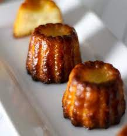

Canele Recipe

Description: a crunchy on the outside, creamy on the inside cupcake sized treat.
Ingredients:
- 3 cups milk
- 1/2 vanilla bean (split lengthwise and scraped)
- 3/4 cup unsalted butter (plus 3 tablespoons)
- 1 cup sugar
- 2/3 cup pastry flour
- 1 egg yolk
- 2 eggs
- 3 Tablespoons dark rum
- 3 ounces beeswax (finely chopped (about 1/3 cup))
Steps:
- In a small saucepan, combine the milk, vanilla bean, and its scrapings.
Bring the milk to the scalding point over medium high heat,
then remove the pan from the heat and add the 3 tablespoons of butter.
Set aside to cool to lukewarm.
- In a large bowl, whisk together the sugar and flour.
In a separate small bowl, whisk together the egg yolk, eggs and rum.
Whisk the egg mixture into the sugar and flour mixture, then whisk in
the lukewarm milk mixture. Strain into a container; cover and refrigerate
for at least 12 hours and up to 48 hours, the flavors will develop as the
mixture sits.
- If using copper molds, melt the beeswax in a saucepan over low heat.
Add the remaining 3/4 cup butter to the melted wax and stir until the
butter is melted. Remove the mixture from the heat and, using a narrow
pastry brush, carefully coat the inside of 18 (2 by 1-inch) canneles
molds. (Dedicate this brush to canneles making because the wax will get
into the brush.) If the wax mixture starts to set up or thicken, return
it to the heat for a moment until it thins.
- If using silicone molds, there is no need to coat them. However, they
should be placed in the freezer for at least 30 minutes prior to
using, in order to help develop a nice crust.
- Remove the batter from the refrigerator for at least 1 hour before
baking it.
- Place your molds on a rimmed baking sheet. When you’re ready to bake,
fill each mold almost to the top. Place the molds on the middle rack of
your preheated oven.
- Bake them for 15 minutes at 450F (convection is highly preferred if you
have it) then lower the temperature to 375F and bake for an additional
45 minutes for copper molds or 40 minutes for silicone molds. If not
using a convection oven, make sure you turn the molds once in a while
too to ensure even baking.
- Let cool slightly. To remove canelles from copper molds, turn each one
over with a pair of tongs and tap until the canelle falls out. If
difficult to remove, use a pairing knife to help guide it out. If
using silicone molds, use a dish towel to squeeze the bottom of each
mold to help remove the canelles. Repeat with remaining batter. Serve
warm.